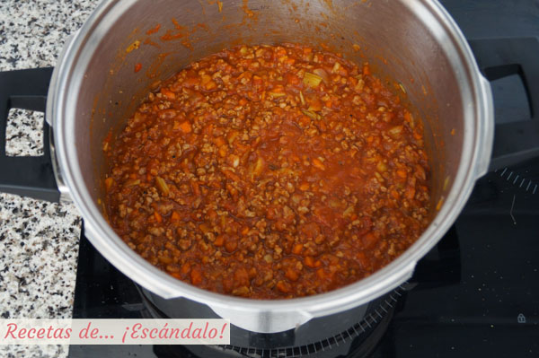

300 gr de carne picada (100 de magro de cerdo y 200 de babilla de ternera)
2 zanahoria
2 cebolla.
1 pimiento
100 ml de vino blanco
200 gr de salsa de tomate o tomate frito
50 ml de leche
Orégano
Unas hojas de albahaca para decorar
Aceite de oliva, sal y pimienta negra recién molida
Preparación
Para empezar a preparar la salsa boloñesa primero pela la cebolla y pícala bien
finita.
Pela la zanahoria con ayuda de un pelapatatas, córtala por en medio y pícala fina al
igual que has hecho con la cebolla.
Para cocinar la salsa te recomiendo utilizar una olla porque, además de cocinar en
ella la salsa, me gusta añadir la pasta al final para mezclarlo todo junto ahí y poder
servirla directamente en los platos de los comensales.
En la olla echa un poco de aceite y ponla a fuego medio-suave. Cuando el aceite esté
caliente incorpora la cebolla y la zanahoria junto con un poco de sal y cocínalas
durante unos 10 minutos o hasta que estén tiernas. La idea es que apenas se doren así
que si eso ocurre y todavía no están tiernas, baja la temperatura del fuego. Si se te
va un poco de las manos y se están dorando demasiado o quemando siempre puedes, además
de bajar el fuego, echar un poco de agua.
Añade la carne picada, mézclala con el resto de ingredientes y ayúdate de una espátula
para ir separándola y que no quede pegada en trozos grandes. Échale sal, pimienta
negra recién molida y orégano al gusto.
Cuando la carne deje de estar rosada sube el fuego para que esté alto, añade el vino
blanco y espera a que se evapore el alcohol, tardará solamente 2-3 minutos.

Baja el fuego para que esté suave e incorpora la salsa de tomate y la leche y déjalo
cocer todo durante 20 minutos para que los sabores se fusionen y la carne quede
tierna. Si conforme avanza la cocción quieres añadirle más salsa de tomate no hay
problema en echársela en el momento que prefieras. Y cuando ya la tengas lista no te
olvides de probarla por si hay que rectificarla de sal o añadirle más orégano o
pimienta.
Cuando ya casi esté lista la salsa boloñesa puedes ponerte a preparar la pasta. Pon
abundante agua a cocer en una olla a fuego fuerte.
Cuando hierva el agua echa una cucharadita de postre de sal y los spaghetti, y en
cuanto hierva el agua de nuevo (tardará muy poco) empieza a contar los minutos que
indique el paquete. En mi caso han sido 8 minutos.
Cuando los spaghetti estén listos échalos sobre un escurridor en el fregadero para que
suelten el agua.
Incorpora los spaghetti a la olla de la salsa boloñesa con el fuego ya apagado,
mézclalo todo bien y ya los tienes listos.